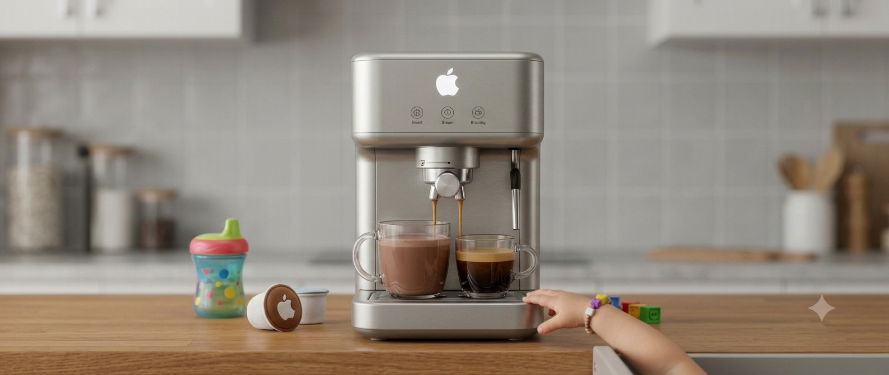
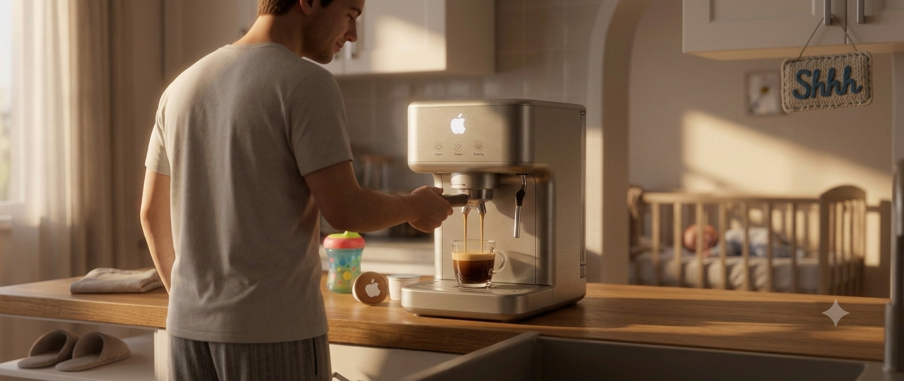
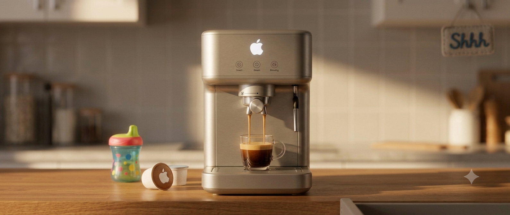
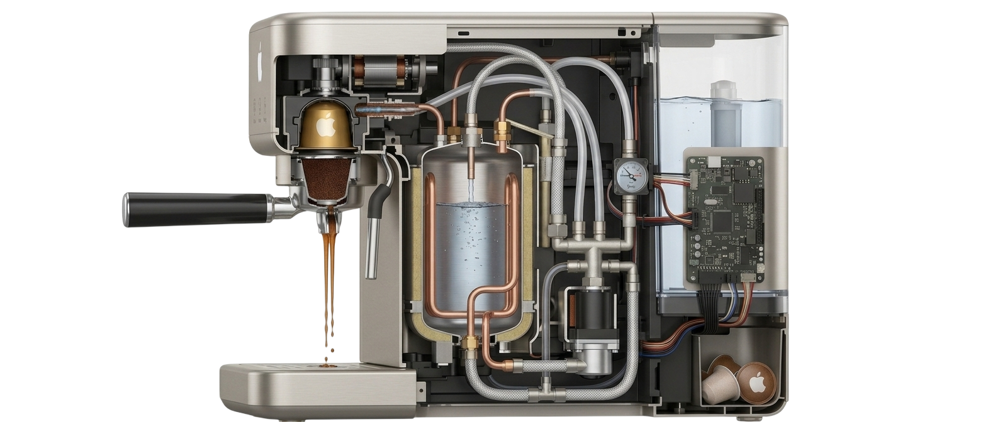
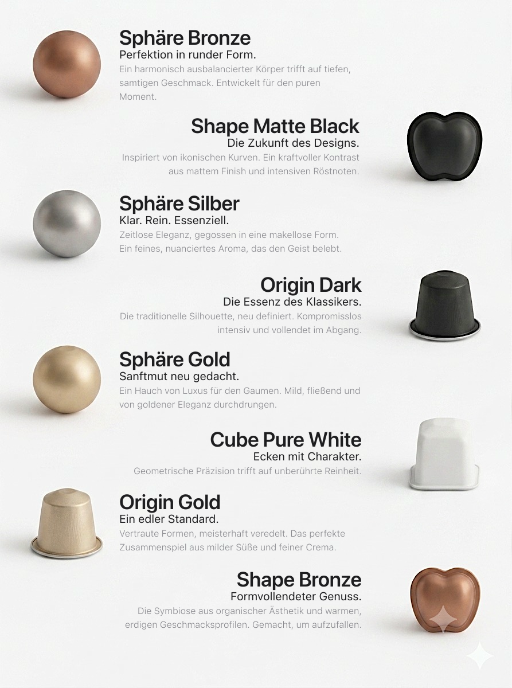

Gemeinsame Momente beginnen hier.

Design
Große Momente brauchen großartigen Genuss.
Das Herzstück des iBrew Family bringt intuitive Café-Technologie direkt zu Ihnen nach Hause. Die hocheffiziente Familien-Pumpe meistert den morgendlichen Ansturm mühelos. Sie liefert perfekte Ergebnisse vom Espresso bis zum Kakao, spart wertvolle Energie und ist kinderleicht zu bedienen. Ein System, das nicht nur in Ihrer Küche glänzt, sondern die Art, wie Ihre Familie den Tag startet, für immer verändert.

Sieh es dir genauer an.
Erhältlich in weichem Creme-Weiß, warmem Titan-Creme und klassischem Silber. Die speziell versiegelte Oberfläche ist extrem kratzfest, leicht abwischbar und perfekt gegen kleine Kinderhände geschützt.
Ein robustes Gehäuse mit sanft abgerundeten Ecken und Kanten. Es fügt sich harmonisch in jede Familienküche ein und sorgt für maximale Sicherheit im Alltag – ganz ohne scharfe Ecken.
Keine Wartezeit am Morgen. Das hocheffiziente Heizsystem ist in nur 12 Sekunden startklar und schaltet blitzschnell zwischen perfekter Kaffeetemperatur und optimaler Hitze für heißen Kakao oder Teewasser um.
Über das intuitive Farbdisplay kann jedes Familienmitglied sein eigenes Profil speichern. Ob der extrastarke Espresso für die Eltern oder die perfekt temperierte, milde Milch für den Kakao der Kinder – ein Fingertipp genügt.
Intelligente Infrarotsensoren erkennen automatisch, ob eine kleine Tasse, ein großes Glas oder ein Thermobecher unter dem Auslauf steht. Sie stoppen den Bezug vollautomatisch, damit in der morgendlichen Hektik garantiert nichts überläuft.

Performance
Intelligenz trifft Geschmack.
Präzision und Personalisierung. In jeder Tasse.
In nur
0
Sek. bereit für den ersten Bezug.
Schneller Genuss für alle, ohne langes Warten am Morgen.
Schneller Genuss für alle, ohne langes Warten am Morgen.
Ein
0
Liter XL-Wassertank.
Genug Kapazität für die ganze Familie, ohne ständig nachfüllen zu müssen.
Genug Kapazität für die ganze Familie, ohne ständig nachfüllen zu müssen.
Mit genau
0
Profilen.
Lieblingsgetränke für Eltern, Großeltern und Kinder perfekt voreingestellt.
Lieblingsgetränke für Eltern, Großeltern und Kinder perfekt voreingestellt.
Die Kapsel
iBrew Kapseln. Wir nennen sie: iCaps
Geschmack und Perfektion auf kleinstem Raum.

Warum iBrew?
Ein Knopfdruck für jedes Alter.
Das iBrew Family ist so konzipiert, dass es von jedem intuitiv bedient werden kann. Große, klare Symbole auf dem Touch-Display führen Schritt für Schritt zum Lieblingsgetränk. Eine integrierte Kindersicherung sorgt dafür, dass heißer Dampf oder Heißwasser nur durch eine bewusste Bestätigung aktiviert werden können.
Perfekt temperierter Kakao.
Kinder lieben Kakao, aber er ist oft zu heiß zum Trinken. iBrew Family besitzt eine exklusive „Kids-Milk“-Funktion, die Milch auf exakt 55°C erwärmt – die perfekte Wohlfühltemperatur für Kinder, bei der man sich nicht den Mund verbrennt und der Kakao sofort schmeckt.
Flüsterleise am frühen Morgen.
Wenn die ersten schon wach sind, dürfen die anderen weiterschlafen. Dank einer speziell schallgedämpften Gehäuse-Architektur arbeitet das iBrew Family flüsterleise. Genießen Sie Ihren ersten morgendlichen Kaffee in absoluter Ruhe, ohne das Haus aufzuwecken.
Reinigung im Handumdrehen.
Wo viel Trubel ist, muss es schnell sauber werden. Das vollautomatische EasyClean-System reinigt die Milchleitungen nach jedem Bezug in Sekundenschnelle mit heißem Dampf. Alle Reste-Behälter sind spülmaschinenfest und mit einem Handgriff entnehmbar. Das bedeutet: Mehr Zeit für die Familie, weniger Zeit fürs Putzen.
Bereit für das nächste Familienfrühstück?
Nicht das passende Modell für Ihr Zuhause?
Entdecken Sie die anderen iBrew Modelle für feinsten Geschmack oder das Büro.